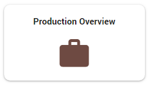
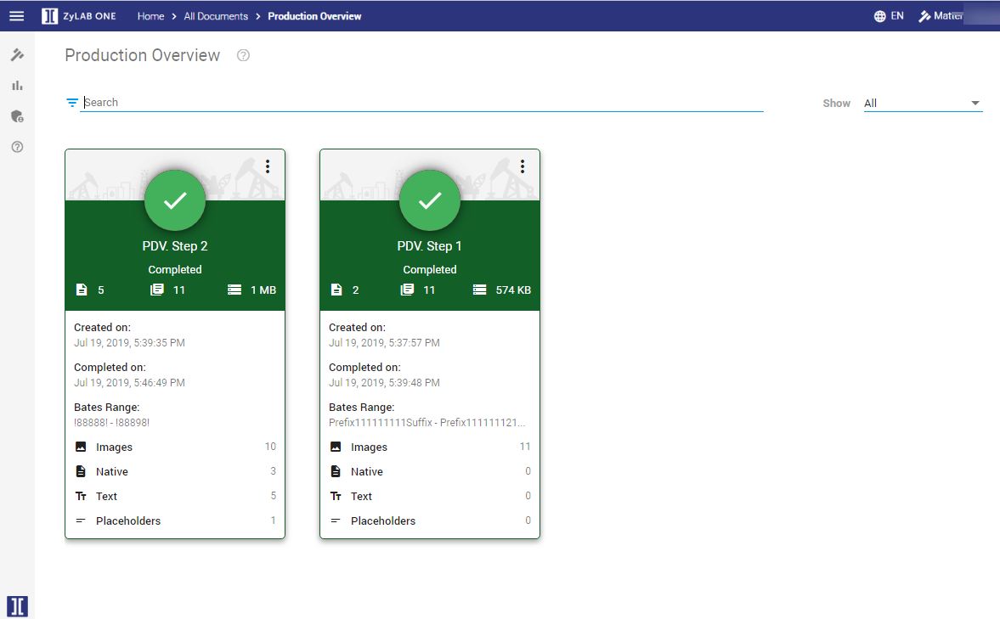
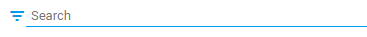

Production Overview
View all productions of the currently open matter. Choose between one of the following:
-
On the Home page, select Production Overview:

-
In Document List, select the Settings icon  , then select Productions > Show All Productions. The Production Overview will appear. All necessary information is displayed at first glance.
, then select Productions > Show All Productions. The Production Overview will appear. All necessary information is displayed at first glance.


Search or Filter
If there are many productions, use the search field to search for a specific production.

Or, filter to show only a subset of all productions.

Production States
Each production card shows the state color (for example, green for Completed), date on which the production was created, date on which the production was ended (for completed, failed and canceled productions), the total number of produced pages and the production size on disk for completed productions.
Other information can include the produced Bates Range and number of produced Images, Natives, Text and Placeholders. Also, the number of skipped documents is displayed.
-
Completed (green)
The production has been completed successfully.
The number of produced documents is displayed.

-
In Progress (blue)
The production is not finished yet.
-
In Queue (orange)
The production is not started yet.
-
Failed (red)
The production did not succeed due to an error. - You can view the day/time on which the production failed (stopped). Click Open Log to view the log file.

- (Optional) You can copy this log file and share it with your administrator:

- (Optional) You can delete the failed production:

-
Canceled (dark orange)
The production has been terminated.
Production Card Options
Each production card has a number of options for further actions. Not all options are available for all Production Card states.

-
Download
Download the entire production, including all related fields
-
Load Files
Download or Edit the load files.
-
Show Location
Show (and copy the link to) the location of the production.
-
Reuse Settings
Reuse the settings of this production for a new one.
-
Delete
Delete the production.
-
If the production has been completed, you can opt to delete All related files.
-
Opt to delete Output Only to delete the produced files but keep the production bates numbers available on the documents (which show that they were part of this production).